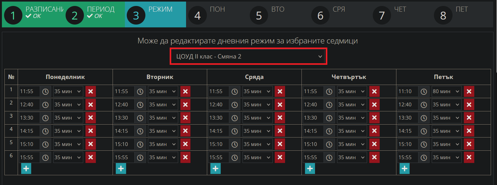
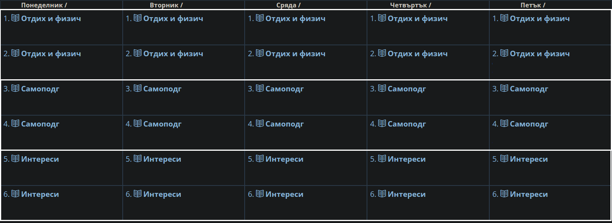
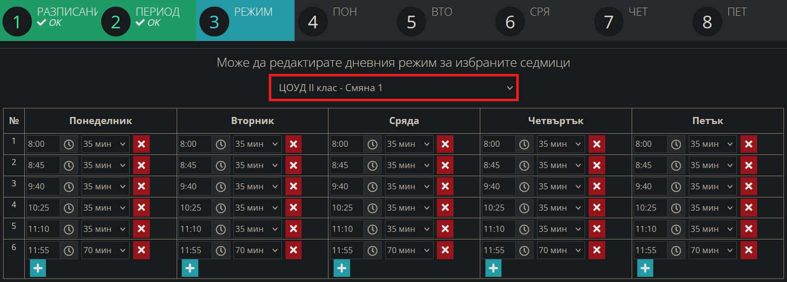
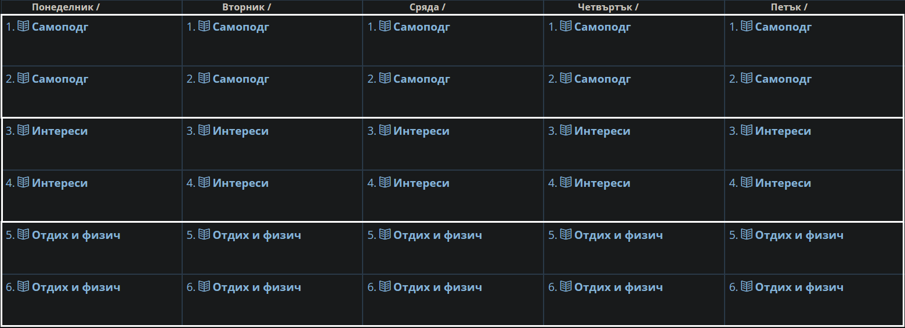

Добавяне на седмично разписание в ЦОУД
Начална страница
Връщане към ШКОЛО
Добавяне на седмично разписание в занималня (Целодневна организация на учебния ден)
1. Вписваме се в Школо - shkolo.bg -> Дневник
2. Избираме дневник на класа:
2.1 Добавяне на разписание
-> Дневник -> паралелка -> седмично разписание ->
-> Добави
 От дата: Начало на учебен срок
До дата: Край на учебен срок
От дата: Начало на учебен срок
До дата: Край на учебен срок
 -> Запази и премини -> Режим -> Избираме подходящ режим: пример ЦОУД II клас - Смяна 2
ЦОУД I клас (1 смяна през цялата година)
ЦОУД III и IV клас - Смяна 2
ЦОУД V клас - Смяна 1
-> Запази и премини -> Режим -> Избираме подходящ режим: пример ЦОУД II клас - Смяна 2
ЦОУД I клас (1 смяна през цялата година)
ЦОУД III и IV клас - Смяна 2
ЦОУД V клас - Смяна 1

-> Добавяме следните занимания за всеки ден от седмицата за едната смяна -> Запази
Показаният пример е за втора смяна

2.2 Добавяне на втората смяна
-> Дневник -> паралелка -> седмично разписание ->
-> Редактирай
 - Маркираме всички месеци, които ще бъдат с друга смяна, понеже само тях ще редактираме;
- например 1-ва смяна, обикновено смените се променят през месец;
- размаркират се месеците за 2-ра смяна, която вече сме задали;
- маркираните остават оцветени със син цвят.
- Маркираме всички месеци, които ще бъдат с друга смяна, понеже само тях ще редактираме;
- например 1-ва смяна, обикновено смените се променят през месец;
- размаркират се месеците за 2-ра смяна, която вече сме задали;
- маркираните остават оцветени със син цвят.
 -> Запази и премини -> Режим -> Избираме режим за другата смяна: пример ЦОУД II клас - Смяна 1
ЦОУД III и IV клас - Смяна 1
ЦОУД V клас - Смяна 2
-> Запази и премини -> Режим -> Избираме режим за другата смяна: пример ЦОУД II клас - Смяна 1
ЦОУД III и IV клас - Смяна 1
ЦОУД V клас - Смяна 2

-> Добавяме следните занимания за всеки ден от седмицата за едната смяна -> Запази
Показаният пример е за първа смяна

3. Проверяваме седмичното разписание за грешки и при необходимост редактираме.
Готово! Нашето седмично разписание е въведено успешно.
Начална страница
Връщане към ШКОЛО